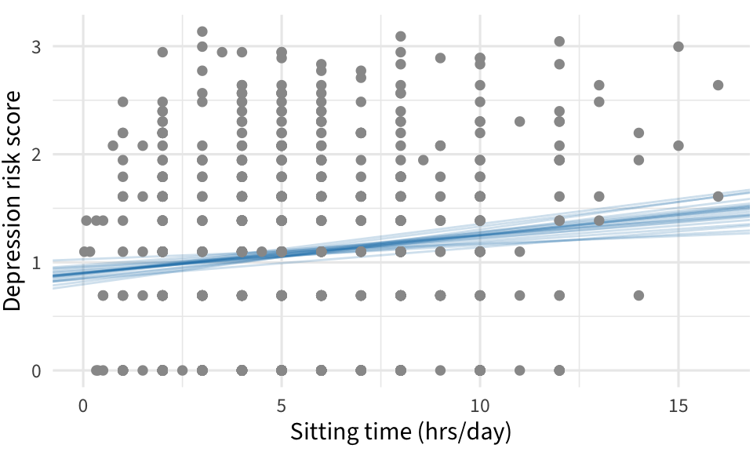
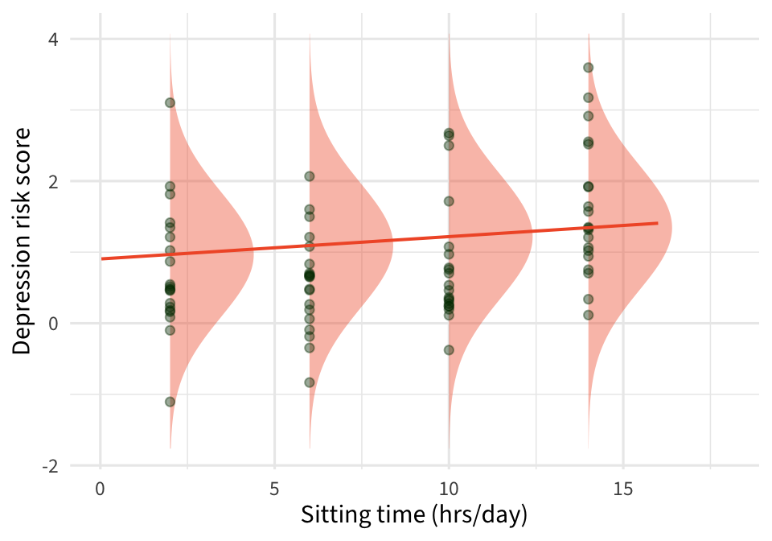

06:00
Day 04
Carleton College
Stat 230 - Spring 2026
Sampling distribution for \(\beta_i\)’s
Confidence intervals for \(\beta_i\)’s
HTs for \(\beta_i\)’s
By hand and by R
Find your groups
Introductions: name, year, intended major
Temperature check: how are you feeling about SLR so far? How about R?
Set group expectations for next two weeks
06:00
Work through the questions on the worksheet about the relationship between income and education level for a sample of riverview city employees
10:00
There are two types of predictions in regression
Predicting the mean response at a specific value of \(x\)
e.g., the average number of riders on a 62 degree day
Predicting the response for a specific future observation
e.g., predicting the number of riders tomorrow (forecast to be 62 degrees)
Think of two additional examples of each type of prediction.
Best estimate \(\widehat{y}_i = \widehat{\beta}_0 + \widehat{\beta}_1 x_0\)
Interval formula: \(\text{estimate} \pm t^* \times \text{SE}\)
We’ll need different SEs depending on if we are building a
confidence interval for \(\widehat{\mu}(Y|X_0)\)
prediction interval for \(\widehat{y}\) or \(\text{Pred}(Y|X_0)\)
\(\text{SE}(\widehat{\mu}(Y|X)) = \widehat{\sigma} \sqrt{\dfrac{1}{n} + \dfrac{(x_0-\overline{x})^2}{\sum_{i=1}^n (x_i - \overline{x})^2}}\)
\(\text{SE}(\widehat{y})= \widehat{\sigma} \sqrt{1+\dfrac{1}{n} + \dfrac{(x_0-\overline{x})^2}{\sum_{i=1}^n (x_i - \overline{x})^2}}\)
Looking at the standard errors for the two intervals, which interval will be wider? Why does this make sense?
As \(x_0\) gets farther from \(\overline{x}\) what happens to the standard errors?
\(\text{SE}(\widehat{y})= \widehat{\sigma} \sqrt{1+\dfrac{1}{n} + \dfrac{(x_0-\overline{x})^2}{\sum_{i=1}^n (x_i - \overline{x})^2}} = \sqrt{\bbox[#f15a31]{\widehat{\sigma}^2} + \bbox[lightblue]{\dfrac{\widehat{\sigma}^2}{n} + \dfrac{\widehat{\sigma}^2(x_0-\overline{x})^2}{\sum_{i=1}^n (x_i - \overline{x})^2}}}\)
Captures variability in \(\hat{\beta}_i\)’s

Captures variability in \(\epsilon_i\)’s

We’ll let R do the computational work
predict allows you to quickly calculate the value of \(\widehat{y}\) for a given \(x\) (or vector of \(x\)s)
The interval argument allows you to specify the type of interval you want
fit lwr upr
1 2471.388 2301.879 2640.898Adding se.fit = TRUE returns the necessary standard errors for “by hand” calculations
Work with your group
Work through the Prediction and Confidence example on the worksheet
You can choose to work in Quarto/Rstudio or an R Tutorial (linked on moodle)